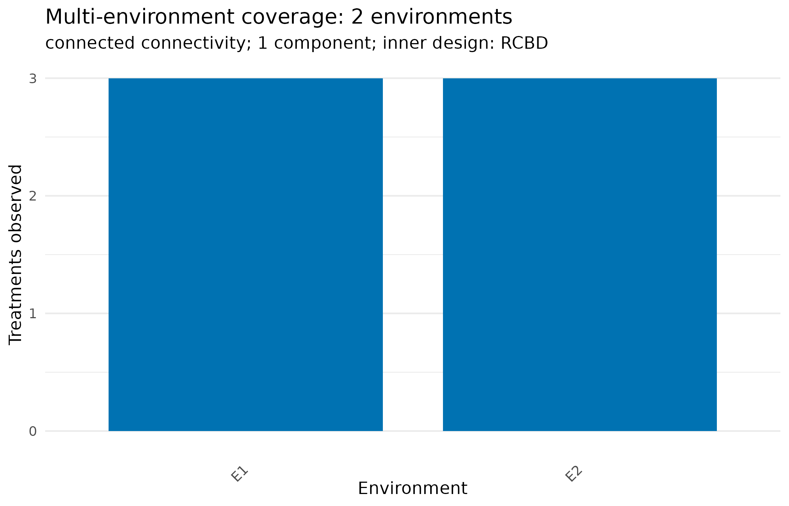

What masque is for
masque exists to bridge an expertise gap. A data
custodian holds a confidential dataset and the legal responsibility for
it, but often only basic R fluency. An analyst has the modelling
expertise but cannot lawfully see the raw data. masque lets
the custodian hand the analyst a structurally faithful
synthetic clone – close enough that a pipeline developed
against it runs unchanged on the real data – while the information that
must stay private never crosses the boundary.
It turns one tabular dataset (or a folder or workbook of related
tables) into a synthetic clone whose experimental design, missing-value
pattern, and global covariance are preserved, alongside a private
recipe that round-trips: a pipeline written against the
synthetic re-targets to the original with no code changes.
It is not an anonymiser. The synthetic is a development surrogate, not a public-release-safe artefact. The companion vignette Confidentiality and the threat model sets out exactly what is and is not protected. Read it before sharing any output.
The one-call path
masque() is the front door. Point it at your data and it
reads the table, proposes a masking plan, masks, and – in an interactive
session – pauses to let you review the plan first. We use the classical
John & Williams (1995) alpha-design field trial, shipped with the
package.
library(masque)
f <- system.file("extdata", "john_alpha.csv", package = "masque")
df <- read.csv(f, stringsAsFactors = TRUE)
head(df)
#> plot rep block gen yield row col
#> 1 1 R1 B1 G11 4.1172 1 1
#> 2 2 R1 B1 G04 4.4461 2 1
#> 3 3 R1 B1 G05 5.8757 3 1
#> 4 4 R1 B1 G22 4.5784 4 1
#> 5 5 R1 B2 G21 4.6540 5 1
#> 6 6 R1 B2 G10 4.1736 6 1
m <- masque(df, mode = "collaborate", seed = 1, ask = FALSE)
#> ℹ Using the proposed masking plan (pass `roles` or set `ask = TRUE` to review).
#> ✔ Masked 7 columns in "collaborate" mode - audit: 0 HIGH, 0 medium, 7 low.
#> ℹ Recipe is private - keep it. Review `audit_mask(m)` before any release decision; masque informs that decision, it does not make it.ask = FALSE skips the interactive review, which is what
we want inside a vignette. In your own console, call
masque(df) and you will see the proposed plan and a prompt
to proceed, edit, or stop.
The result carries the synthetic data and the private recipe:
synth <- synthetic(m)
head(synth)
#> # A tibble: 6 × 7
#> plot rep block gen yield row col
#> <int> <fct> <fct> <fct> <dbl> <int> <int>
#> 1 1 R1 B1 trt_011 4.15 1 1
#> 2 2 R1 B1 trt_004 4.25 2 1
#> 3 3 R1 B1 trt_005 4.58 3 1
#> 4 4 R1 B1 trt_022 5.30 4 1
#> 5 5 R1 B2 trt_021 3.99 5 1
#> 6 6 R1 B2 trt_010 5.26 6 1The masking plan: roles and actions
Under the one-call path, masque() builds the roles
table for you. You can build and edit it yourself for full control.
Every column gets two decisions: a role (what the column
is) and an action (what masque does to it).
roles <- propose_roles(df, mode = "collaborate")
roles[, c("col", "role", "action", "kind")]
#> # A tibble: 7 × 4
#> col role action kind
#> <chr> <chr> <chr> <chr>
#> 1 plot design keep integer
#> 2 rep design keep factor
#> 3 block design keep factor
#> 4 gen treatment alias factor
#> 5 yield covariate scramble numeric
#> 6 row design keep integer
#> 7 col design keep integerThe eight roles – design, treatment,
outcome, covariate, date,
id, text, other – describe the
column. The four actions set the depth:
-
keep– pass the column through byte-for-byte. -
scramble– re-simulate numerics through a Gaussian copula, or row-permute categoricals, dates, and text (the vocabulary stays visible). -
alias– scramble and replace the labels with opaque codes. -
drop– leave the column out of the synthetic entirely.
propose_roles() fills in a sensible action for each
column given the mode, so the table you review is the plan that will
run. Edit it with set_role():
roles <- set_role(roles, "yield", role = "outcome")
roles[, c("col", "role", "action")]
#> # A tibble: 7 × 3
#> col role action
#> <chr> <chr> <chr>
#> 1 plot design keep
#> 2 rep design keep
#> 3 block design keep
#> 4 gen treatment alias
#> 5 yield outcome scramble
#> 6 row design keep
#> 7 col design keepRe-assigning a role re-resolves the default action. Passing an
explicit action pins the column. There is no requirement to
name an outcome: with none marked, every scrambled numeric
is re-simulated jointly.
Editing the plan as code
The printed table – and the spreadsheet the guided prompt opens when
you choose e – is an ordinary data frame, so anything the
editor can do, a script can do reproducibly. set_role() is
vectorised over columns:
Direct edits work too. A direct role edit leaves
action untouched, so set the action to NA when
you want mask() to re-resolve the default for the new
role:
r2$role[r2$col == "rep"] <- "covariate"
r2$action[r2$col == "rep"] <- NA
r2[, c("col", "role", "action")]
#> # A tibble: 7 × 3
#> col role action
#> <chr> <chr> <chr>
#> 1 plot design keep
#> 2 rep covariate NA
#> 3 block design keep
#> 4 gen treatment alias
#> 5 yield outcome scramble
#> 6 row design drop
#> 7 col design dropThe kind column is derived from the column’s class,
never chosen, and editing it changes nothing. Convert the column in the
data and re-propose if the kind is wrong.
Not every role and action pair makes sense – a design column cannot
be scrambled, an outcome has no labels to alias.
role_options() renders the full grid the validator accepts,
and its kind argument filters it to what is available for
one column’s storage kind:
role_options(kind = "factor")
#> # A tibble: 24 × 4
#> role action kinds notes
#> <chr> <chr> <chr> <chr>
#> 1 design keep all ""
#> 2 design alias factor, character, logical "design label aliasing requires a factor / charact…
#> 3 design drop all ""
#> 4 treatment keep all ""
#> 5 treatment scramble factor, character, logical "treatment scramble / alias requires a factor / ch…
#> 6 treatment alias factor, character, logical "treatment scramble / alias requires a factor / ch…
#> 7 treatment drop all ""
#> 8 outcome keep all ""
#> 9 outcome drop all ""
#> 10 covariate keep all ""
#> # ℹ 14 more rowsFinally, pii_suspected. propose_roles()
sets it from the column name (email,
phone, owner, …), and the leakage audit treats
a flagged column that survives into the synthetic as a HIGH finding. The
scan reads names, not content, so when a harmlessly named column holds
sensitive values, flag it yourself and the audit honours the flag:
roles$pii_suspected[roles$col == "comments"] <- TRUEPass the edited table back to mask() (or to
masque(df, roles = roles)):
m <- mask(df, roles, mode = "collaborate", seed = 1)
synth <- synthetic(m)
identical(synth$plot, df$plot) # design column: byte-identical
#> [1] TRUE
setequal(levels(synth$gen), levels(df$gen)) # treatment: aliased away
#> [1] FALSE
head(levels(synth$gen))
#> [1] "trt_001" "trt_002" "trt_003" "trt_004" "trt_005" "trt_006"Local and collaborate modes
The mode sets the safe defaults.
| Mode | Use case | Defaults |
|---|---|---|
local |
Owner develops on a realistic surrogate locally | Vocabulary preserved, with numeric values that may match observed |
collaborate |
Owner shares the synthetic while keeping the recipe private | Treatment and categorical labels aliased, numerics jittered, ids and free text dropped, and the leakage audit run automatically |
Per-column action choices override the mode wherever you
need them. When mask() or mask_set() is called
without mode, it inherits the mode stored on the reviewed
roles plan. Passing mode = "local" explicitly with a
collaborate-mode plan raises a warning so a sharing-oriented plan cannot
be silently downgraded.
Tidy, dates, and depth
Real custodian tables are rarely clean. masque()
legalises column names and trims stray whitespace before masking,
reports near-duplicate labels (likely typos) without merging them, and
records every fix so the round-trip still lines up. Set
clean = "report" to preview the fixes, or
clean = "off" to skip them.
Date and time columns get the first-class date role:
they are row-permuted, keep their class, and preserve the NA pattern.
When even the column names are sensitive,
alias_names = TRUE hides them behind opaque codes that the
recipe inverts.
More than one table
A confidential dataset often arrives as several related files or a
multi-sheet workbook. masque() handles those too – point it
at a folder, an .xlsx file, or a named list of data frames
and it masks every table at once, aliasing any shared key (a site code,
a genotype name) identically across tables so a join of the
synthetic tables still resolves.
set_dir <- system.file("extdata", "met_set", package = "masque")
ms <- masque(set_dir, mode = "collaborate", seed = 1, ask = FALSE)
#> Warning: Numeric environment column(s) year remain "keep" in collaborate mode.
#> ℹ This preserves environment structure but may disclose year or other numeric labels; review before
#> release.
#> ℹ Using the proposed masking plan for agronomy (pass `roles` or set `ask = TRUE` to review).
#> ℹ Using the proposed masking plan for quality (pass `roles` or set `ask = TRUE` to review).
#>
#> ── Cross-table links (2) ──
#>
#> • "env" shared across "agronomy, quality" - aliased consistently
#> • "gen" shared across "agronomy, quality" - aliased consistently
#> ✔ Masked 2 tables in "collaborate" mode - audit: 0 HIGH, 0 medium, 12 low.
#> ℹ Recipe is private - keep it. Review `audit_mask(m)` before any release decision; masque informs that decision, it does not make it.
ms
#>
#> ── masque_set ──────────────────────────────────────────────────────────────────────────────────────
#> • Mode: collaborate
#> • Tables: 2
#> • agronomy: 464 row(s) x 7 column(s)
#> • quality: 464 row(s) x 5 column(s)
#>
#> ── Cross-table links (2) ──
#>
#> • "env" shared across "agronomy, quality"
#> • "gen" shared across "agronomy, quality"
#> Use `synthetic(m)` for the tables; `recipe(m)` for the bundle.
#>
#> ✖ The recipe bundle is PRIVATE - never share it with the synthetic set.The genotype column gen appears in both tables and is
masked to the same codes in each, so the field and laboratory tables
still join. See Confidentiality and the threat model for the
set-level controls.
Multi-environment structure
A multi-environment trial has at least three distinct structural
questions: (1) which rows belong to each environment, (2) whether
treatments connect the environments, and (3) what randomisation
structure can be recovered within each environment.
detect_design() reports these separately. Connectivity is a
comparability diagnostic, not the definition of a multi-environment
trial. An observed block or field layout is evidence, not proof of the
original randomisation protocol.
This small example has two environments and three genotypes:
met <- expand.grid(
env = factor(c("E1", "E2")),
rep = factor(seq_len(2L)),
gen = factor(c("G1", "G2", "G3"))
)
met$yield <- seq_len(nrow(met)) + rep(c(0, 2), each = 6L)
ds <- detect_design(met)
ds@scope_label
#> [1] "multi_environment"
ds@env_cols
#> [1] "env"
ds@connectivity$status
#> [1] "connected"
ds@within_design_label
#> [1] "RCBD"Automatic detection is deliberately conservative. Exact
env or environment names and bounded site-year
patterns can be selected when they pass validity and competition gates.
A site-only column auto-resolves only when treatments are replicated
across sites, preventing a nested block from being promoted as an
environment. Weak or competing evidence remains uncertain. Supply the
basis explicitly when domain knowledge is stronger than the recorded
names:
ds_explicit <- detect_design(met, env = "env")The default plot is a compact environment overview. Select one label
to inspect its recoverable field structure. The original data frame
remains an explicit argument because design_summary does
not duplicate source data.
plot(ds_explicit, df = met)
High-confidence environment recommendations feed the masking plan.
Local mode keeps environment values byte-identical. Collaborate mode
aliases categorical environment labels in place, preserving row
assignment, factor codes, the NA mask, and recipe inversion. A numeric
environment such as year remains keep and raises a
disclosure warning because its values are still visible.
met_roles <- propose_roles(met, mode = "collaborate")
met_roles[met_roles$col == "env", c("col", "role", "action")]
#> # A tibble: 1 × 3
#> col role action
#> <chr> <chr> <chr>
#> 1 env design aliasThis safeguard protects the allocation used by a pipeline. It does not imply that the synthesised outcomes preserve genotype-by-environment effects. Sparse treatment-by-environment cells may fall back to pooled synthesis, and the clone must not be used as a substitute for the original trial in scientific inference.